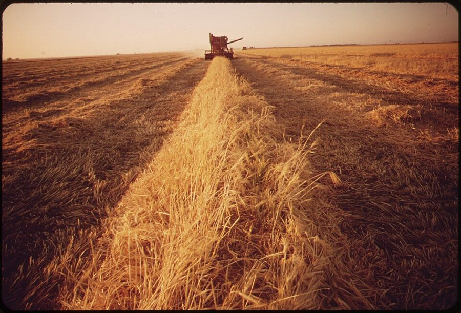
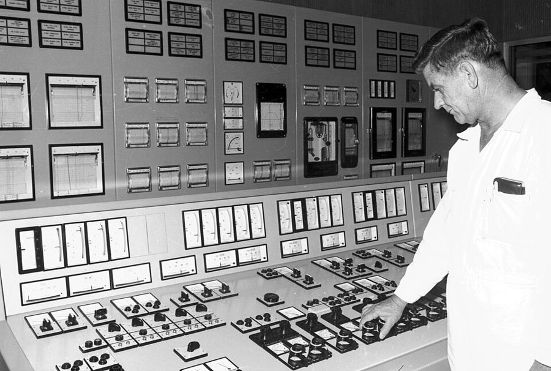
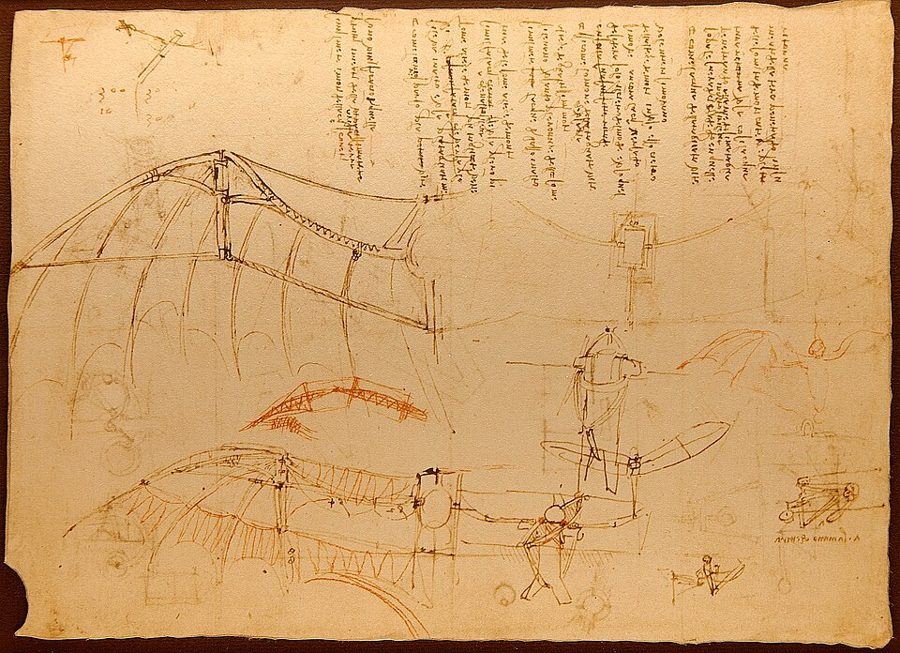
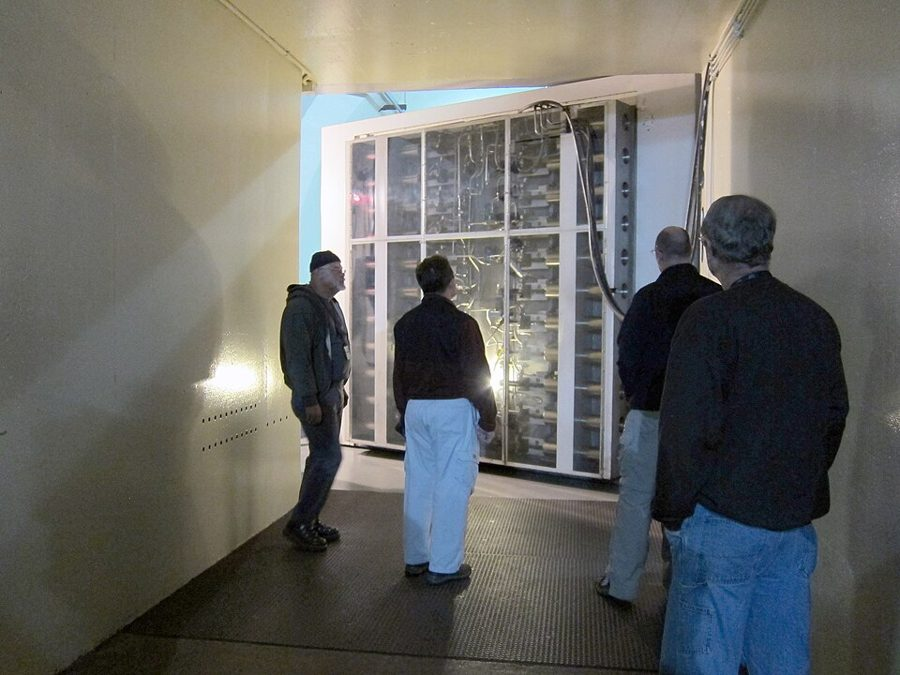

这一章在做什么
赶路的一章，分成两半。前半在南加州：Dan 连夜出门，几天里换了五六个地方，地名密，叙述快，几乎没有停下来的句子。后半换到科罗拉多，慢下来，大半篇幅是 Dan 和一位老教授的对话，从酒吧谈到实验室。
难点都在后半：教授说话文绉绉，骂人不带脏字；实验室里有一串电气行话；还有一段话要把时态看清楚才读得懂。抓两样：Dan 在每个人面前怎么介绍自己；教授最在乎的是什么。
科罗拉多大学博尔德分校（University of Colorado Boulder）最老的楼 Old Main，后面的斜岩壁叫 Flatirons。这一章的后半就在这座大学城。
cuboulder，公有领域，维基共享资源（拍摄于 2017 年）
人物
都是虚构的人。老人物只写到上一章结束时你已经知道的。
Dan Davis 叙述者「我」 醒来五个月，在 Hired Girl 公司挂名上班。上一章他查到两份 1970 年的专利署着自己的名字，又在凌晨从报上认出了一个名字。
Ricky Frederica Virginia，没有出场 Miles 的继女，Dan 最信得过的人。上一章结尾：她也进过冷眠，用的是外婆家的姓 Heinicke，刚从 Riverside 的库房醒来，而且已经离开。
Mr. Larrigan 和 Mrs. Larrigan新 Hank 和 Nancy Riverside 库房的夜班技术员和夜班护士，是夫妻。丈夫就是上一章电话里那个人。
Dr. Bernstein新 库房的年轻医生 还在受训的住院医师，早上八点来上班。
Dr. Albrecht 只提到 Sawtelle 库房里把 Dan 唤醒的医生，待他很好。
Chuck Freudenberg 只提到 Dan 在公司里的啤酒搭子。上一章是他说漏了嘴：时间旅行是真的，但被军方定了密，而且没法用。
Dr. Hubert Twitchell 博尔德的物理教授，第一次出场 Chuck 嘴里的 Twitch：那台机器是他做出来的，「差一点拿到诺贝尔奖，为此变得很难相处」。
Colonel Thrushbotham新 只提到 上一章 Chuck 讲过的那位驻校上校，当时没有名字。是他给教授的研究盖上了保密章。
Leonard Vincent 只提到 Chuck 管他叫 Leo Vincent：博尔德的一位教员，跟教授进了实验室，没有出来。
Miles Gentry 只提到一句 Dan 当年的合伙人，Belle 说他 1972 年前后就死了。
场景地图
这一章原书用空行分成 2 节，本站再按场景细分成 7 段。粗体是每个场景开头的几个词，照着它在书里找位置；读完一个场景回来打个勾。
I COULD HAVE saved time …约 550 词 天刚亮，Riverside 的库房。值夜班的两口子意见不一：留意谁肯说、谁拦着。 But Larrigan must have bent …约 450 词 先是年轻医生的一段训话，然后是几天的奔波，地名一个接一个。最后一段读慢一点。 I STOPPED IN DENVER just …约 450 词 换到科罗拉多。先进一家店，满段数字和材料行话；再到 Boulder，写一位老人。 The first time I saw …约 650 词 酒吧里的长谈，前后好些天。留意 Dan 怎么介绍自己。教授骂人的那一句慢慢读。 Most of the building was …约 800 词 进实验室。一段设备描写（行话），然后是一场演示。演示之后的解释要盯住时态。 I looked at it. …约 500 词 还在实验室，两个人一来一往。教授讲到一件旧事，留意里面的一个人名。 “As you wish, Doctor.” But …约 900 词 对话越来越短。中间一通电话是全章最刻薄的话；最后一页一句一句读。
背景：作者默认你知道的事
这些都是真实世界里的东西。按在书里出现的顺序排。
场景 1 Riverside 和这一章的地名
太平洋
墨西哥
科罗拉多河
亚利桑那州
加利福尼亚州
Salton Sea
洛杉矶
Riverside
Brawley
Calexico
Yuma
Denver、Boulder
东北方约 1300 公里
约 100 公里
本站示意图，位置是大致的。Riverside 在洛杉矶市中心以东约 85 公里，是内陆的一座城；后三个地名都在东南方的沙漠里。
Dan 住在洛杉矶西边（West Hollywood），银行在市中心，Riverside 在更东边。开头那句「本来可以省时间」说的就是这条先往东进城、再往东出城的路。
场景 2 Imperial Valley：Brawley、Calexico、Yuma
1972 年 5 月，Brawley 附近 Imperial Valley 的大麦田。
Charles O’Rear 摄，美国国家档案馆，公有领域，维基共享资源 加州东南角的一片沙漠洼地，低于海平面，靠科罗拉多河的水灌溉成了农业区，夏天极热。Brawley 是其中一个农业小城，现实里只有两万多人。
Calexico 贴着国境线，名字是 California 加 Mexico。Yuma 在河对岸，已经是亚利桑那州。第 7 章里 Belle 说 Ricky 的外婆住在「Tucson 还是 Yuma 之类没劲的地方」，就是这一带。
场景 3 Denver 和 Colfax Avenue
丹佛的科罗拉多州议会大厦，门牌就在 Colfax Avenue 上。圆顶贴的是真金箔，纪念这个州靠淘金起家。
Ken Lund 摄，CC BY-SA 2.0，维基共享资源
丹佛是科罗拉多州的首府，海拔正好一英里（1609 米），西边紧挨着落基山（the Rockies）。Colfax Avenue 是横穿全城的东西向主干道，谁都找得到。
所以「连 Colfax 都找不着」等于说北京人在北京找不着长安街。Boulder 在丹佛西北约 40 公里，是山脚下的大学城。
场景 3 黄金的几个数
10 公斤纯金
约 0.52 升，边长 8 厘米
1 夸脱牛奶
0.95 升，约 1 公斤
14 号线（fourteen-gauge）
直径 1.6 毫米，10 公斤约 250 米
金的密度是 19.3 克每立方厘米，差不多是铁的两倍半
本站示意图。按密度算，十公斤金的体积只有半夸脱多一点；书里拿一夸脱牛奶来比，说得大了些。
天然的金只有一种稳定同位素：金-197。别的同位素都有放射性，像 196、198，几天就衰变掉一半。牙医镶牙、补牙用金，所以牙科材料行（dental-supply house）是普通人能买到高纯度金的地方。
kilogram 是公制，美国人日常用磅；书里的 2001 年已经改用公制了。
场景 3 大学里的几个词professor emeritus ：荣休教授，退休后保留头衔，不再上课。faculty club ：教员俱乐部，只对本校教员开放，里面有酒吧和餐厅。
class of ’86 ：86 届，按毕业 年份算。earned degree 是读出来的学位，honorary degree 是学校授予名人的荣誉学位。
resident ：住院医师，医学院毕业后在医院受训的那几年。
场景 3 「希腊悲剧意义上的」悲剧人物日常英语里 tragic 只是「很惨」。古希腊悲剧里的主人公有特定的意思：本身是了不起的人，不是坏人，因为性格里的一个缺陷加上命运，从高处跌下来。
同一句里的三个名字是物理学的最高一档：牛顿、爱因斯坦，和丹麦人 Niels Bohr（玻尔，原子结构和量子论的奠基者，1922 年诺贝尔奖）。
场景 4 诺贝尔奖和「保密」科学上的功劳要靠发表来认：论文登出来，同行验证了，才轮得到评奖。拿军方经费做的研究，军方有权定密（classify），定了密就不能发表，外面的人不知道有这回事。
1950 年代美国大学里这种合同很多，国防部（Department of Defense）派驻的军官管着保密。上一章 Chuck 说过：政府要是办得到，连 sex 都要定密。
场景 5 控制台、记录仪、电磁开关
澳大利亚 Callide 火电厂的控制室，约 1967 年。墙上带格子纸的方窗就是走纸记录仪。书里说那块控制板「放在蒸汽电厂里也合适」，指的是这种样子。与本书无关。
Queensland State Archives，公有领域，维基共享资源 Brown recorder ：美国 Brown 仪表公司（Honeywell 旗下）的走纸记录仪，当年工厂和实验室里到处都是，纸带匀速走，笔在上面打点。eight-point 是同时记八路信号。
solenoid 是电磁线圈，通电就吸动铁芯；用它来扳的开关可以远程控制很大的电流。low-pressure chamber 是模拟高空的低压舱。Dan 认得每个零件，但没有电路图就看不出它们怎么连。
场景 6 Leonardo da Vinci
达·芬奇的扑翼飞行器草图，《大西洋手稿》第 858 页正面。
Leonardo da Vinci 绘，Luc Viatour 摄（lucnix.be），原作属公有领域，维基共享资源 1452 年生于意大利佛罗伦萨附近的 Vinci 镇，1519 年去世。da Vinci 不是姓，意思是「Vinci 镇来的」。
他是画家，也是工程师，笔记本里画满了当时造不出来的机器。第 5 章里 Dan 提过他：超出时代太远，最妙的设想根本造不出来。
场景 6 「Great White God」一个流传很广的说法：1519 年西班牙人 Cortés 到墨西哥，阿兹特克人把这些白皮肤的外来者当成了传说中要回来的神。这个说法靠不靠得住，史家有争议，
但它成了二十世纪探险小说的老套：一个带着先进知识的白人落到「原始人」中间，被奉为神。加了大写和引号，是在引用这个老套。
书里的世界
这一章的 2001 年春天仍然是 1956 年想出来的未来。下面这些是设定，不是历史。先把上一章已经讲明的那台机器的规矩画出来，这一章要用。
上一章 Chuck 在酒桌上讲的：MT = mt
笼子里的台子：两份一样重
一份
另一份
过去
未来
哪一份？
哪一份？
哪一份往哪边，事先不知道
去了就回不来；跳得越远越费电；军方定了密，不许人用
本站示意图，只画到上一章为止你已经知道的。Chuck 当时只是个打下手的学生，他说的未必全对。

真实世界的「埋在落基山底下」：科罗拉多州夏延山（Cheyenne Mountain）指挥所的防爆门，一扇重二十多吨。照片摄于 2012 年。
U.S. Air Force，Joann Missey 摄，公有领域，维基共享资源
书里的说法 在书里是什么 真实世界里 the universal checkbook system 全城的银行连在一个 cybernet 上统一清算，支票簿上有放射性编码，在哪家银行都能当场取现。Dan 说这是一项「真正的改进」。 1956 年支票要寄回开户行核对，异地取现很慢。第一台自动取款机 1967 年出现在伦敦；后来的跨行联网、银行卡做的就是这件事。 cybernet 做清算的那张网。只有这个词，没解释。 作者造的词，取自 cybernetics（控制论，1948 年有的词）。 twenty-four-hour bank 全天营业的银行，最近的一家在市中心。 — the Ways / the Grand Circle of the Ways / the express Way the Ways 前几章见过：城里载人的交通带。这一章多了市中心的总枢纽 Grand Circle，和一条通到 Riverside 的快线。 没有。海因莱因 1940 年的短篇《The Roads Must Roll》写的就是会动的公路。 jump / jumpcab 出租的飞行载具，按次雇。动词也叫 jump。比 the Ways 快，也贵。第 6 章有 gravJumper。 — stereo 立体照片，当名词用。第 5 章的报纸上已经有立体的图。 — Beardgo 管装的东西，洗手间的售货机里卖，用了就不必刮胡子。商标名：beard + go。 脱毛膏是有的，没有用来代替刮脸。 dispenser 自动售货机，连衬衫都卖，旧的穿完就扔。 自动售货机 1956 年已经很普遍，卖的是香烟、汽水、糖。 Great Los Angeles，seven million 大洛杉矶七百万人；Brawley 十万人。 现实里 Brawley 只有两万多人。 a ship for Denver 去丹佛的长途交通工具，叫 ship。没解释是哪一种。 — Denver, the capital 六周战争里华盛顿被炸，首都迁到了丹佛。政府的要害部门据说都埋在落基山底下，地面上照样挤满了人。 首都没迁过。但美国真在科罗拉多的山里挖了指挥所：夏延山，1961 年动工，1966 年启用，比这本书晚十年。 engineering gold，$70 a kilogram 工程用的金，每公斤 70 美元上下，是合金，或者掺有金-196、金-198。第 5 章说过：1987 年以后金子很便宜，不再是货币的基础。它是怎么变便宜的，书里没说。 1956 年金价是官定的每盎司 35 美元，合每公斤 1100 多美元。真实的 2001 年约每公斤 8700 美元。 thousand-dollar bill Dan 身上唯一的一张千元大钞，2001 年还在流通。 千元美钞真有过，1969 年起不再发行、陆续回收。 five-dollar pieces / half fives 五美元的硬币，当年新发行的，绿色塑料，六角形。half fives 看字面是面值减半的那种。 美国没有发行过塑料硬币。 temporal displacement 教授对「时间旅行」的正式叫法：时间上的位移。他不用 time travel 这个词。 — temporal locus stage 实验室里看得见的那部分：一个矮台子，外面罩着笼子。locus 是「位置」。 — Thornton Memorial Laboratory 教授那座实验楼的名字，这一章才出现。上一章 Chuck 说过这座楼 1980 年建在城外山里的松林中。 — 不带屏幕的旧电话 实验室角落里那部电话，Dan 醒来以后没见过这种样子的。2001 年的电话一般带屏幕。 可视电话到 2001 年并没有普及。
这一章的行话，先用中文过一遍
场景 5 和场景 7 在实验室里，说的是仪器和供电。概念都不难，难在词。
校准和「几分之一」
calibrate 是校准：拿仪器的读数和已知的标准对一遍，弄清楚「我拨到这个刻度，实际出来的是多少」。没校准过的仪器能用，但说不准用出来的量有多大。
精度常说成 accurate to one part in … ：「一百万分之一以内」之类。它是相对 误差，量越大，绝对误差跟着变大。按十万分之一算：量一天（86,400 秒），误差不到 1 秒；量一年（约 3156 万秒），误差就是五分多钟。
plus or minus 是「正负」，magnitude 是「大小、量值」。
小开关管大电流
powerhouse
学校的发电房
bus bars
母线：粗铜排
电磁开关
solenoid-actuated
设备
pilot switch 先导开关
一点点电流，去吸合大开关
line voltage
墙上插座那种普通市电
小功率时够用
本站示意图。人的手指只碰下面那只小开关；真正接通大电流的是上面的电磁开关。程序员可以把 pilot switch 想成触发器，把电磁开关想成它调起的重任务。
大电流不能让人用手去扳，所以用两级：手按一只小开关，小开关给电磁线圈通电，线圈再合上粗的触点。大学、工厂自己有发电房（powerhouse），要用大功率得提前通知值班的人把电送到某栋楼的母线上。
英文 中文 一句话 field theory 场论 物理学里研究引力场、电磁场这类「场」的理论。书里的 NullGrav 出自它的一支。 calibrate 校准 把刻度和实际的量对上。 magnitude 量值，大小 the exact magnitude：到底有多大。 plus or minus 正负 写作 ±，给出误差范围。 accurate to one part in … 精确到……分之一 相对误差的说法。 control board 控制板，控制台 装着仪表和开关的一面板子。 recorder 记录仪 把信号画在走动的纸带上。不是录音机。 solenoid-actuated switch 电磁开关 actuate 是「驱动」。靠电磁线圈来合闸。 component 元件 familiar components：认得的零件。 circuit diagram 电路图 相当于硬件的源代码。 line voltage 市电电压 line 是供电线路。 bus bars 母线，汇流排 配电柜里分配大电流的粗铜排。计算机里的 bus（总线）是从这个词借的。 powerhouse 发电房 大学自备的小电厂。 pilot switch 先导开关 pilot 是「引导的」。小开关，用来触发大开关。 dry run 空转演练 所有步骤照做，只是不真的执行。程序员说的 dry run 是同一个意思。
词与短语
词条按在书里出现的顺序排，按场景分组。斜体小字是它所在的那句话里的几个词，方便你在书里找到。
场景 1 I COULD HAVE saved time …
jump someone to
… a cab to jump me to Riverside, …
（用飞的）把某人送到
2001 年的说法，见「书里的世界」。hire a cab 是雇一辆出租。
handicapped by
… I was handicapped by lack of …
受制于，吃亏在
handicap 原是赛马时给强马加的负重。
appreciate
… I had not appreciated up to …
体会到……的好处
不是「感激」。up to then：在那之前。
clearinghouse
… single cybernet as clearinghouse for the …
票据清算所
各家银行互相轧账的地方。程序员说的 clearing house 也是这个比喻。
home bank
… at my home bank across from …
自己开户的那家银行
home 作定语：本部的、自己那一处的。
catch (the express)
… Then I caught the express Way …
搭上（快线）
catch a bus / a train 的 catch。
a day’s beard
… I had a day’s beard, I …
一天没刮的胡茬
work out
… had not worked out a consistent …
想好，编圆
a consistent framework of lies：一套前后对得上的谎话。Dan 直说自己是打算撒谎的。
twentyish
… young woman, twentyish or older, with …
二十岁上下
-ish 加在数字后面：大约。sixish 是六点左右。
pixie
… the ageless pixie quality of her …
小精灵似的（神气）
第 5 章 Dan 用同一个词说过 Pete。ageless：不随年龄变的。
fill out
… same face, matured, filled out, grown …
长开了，丰润了
不是「填表」。说人从瘦削的孩子长成大人。
manage to choke
… “Yes,” I managed to choke. …
哽着嗓子挤出一句
choke 是噎住。上一句的 stereo 是立体照片。
Pooh
… “Pooh, Hank, what harm is …
得了吧
表示不以为然的语气词。what harm is there in …：……又碍着什么了。
give out
… we don’t give out information about …
对外透露
have no business doing
… Bernstein hasn’t any more business answering …
没有资格做，轮不到他做
business 这里是「分内的事」。整句：Bernstein 和咱们一样无权回答。
fussy
… “Hank, you’re being fussy. You …
较真，事儿多
you’re being …：你这会儿正在犯……的毛病。
a real nice place
… there’s a real nice place just …
一家挺不错的馆子
real 当副词用（= really），口语。下一段 Dan 加了引号照搬，又在括号里补一句「确实不错」。
dispenser
… Beardgo from a dispenser in the …
自动售货机
dispense 是分发。现在常见的说法是 vending machine。
respectable
… returned I was fairly respectable. …
像个样子，见得了人
不是「可敬」。说仪表过得去。
场景 2 But Larrigan must have bent …
bend someone’s ear
… must have bent Dr. Bernstein’s ear …
拉着某人说了一大通
字面是「把耳朵掰弯」。这里是 Larrigan 先去打了招呼。
resident in training
… a young man, resident in training, …
受训中的住院医师
不是「居民」。见「背景」。
take a stiff line
… he took a very stiff line. …
态度很硬
line 是立场、口径。take a hard line 更常见。
prey on
… regular business of preying on the …
专挑……下手
prey 是猎物。make a regular business of：把……当成固定营生。
gullibility
… on the gullibility and lack of …
容易上当
形容词 gullible，场景 6 里还会出现。lack of orientation：摸不清方向，对新世界不熟。
unworldly
… all of them are unworldly in …
不懂世道
后面紧跟 in the world，是个小小的文字游戏。
a perfect setup
… scared—a perfect setup for confidence …
现成的下手对象
setup 在俚语里是「容易得手的局」。
confidence man
… setup for confidence men.” …
骗子
先骗取信任（confidence）再骗钱的人。缩写就是 con man，第 3 章的 the big con 是同一个 con。
one of the Twelve Standard Faces
… one of the Twelve Standard Faces, …
「十二种标准脸」里的一种：大众脸
Dan 编的说法，大写是装正经，自嘲长相普通。
one peanut in a sackful
… as one peanut in a sackful. …
一麻袋花生里的一颗
-ful：满满一……的量。
look judicial
… He looked judicial. “You come …
摆出一副法官的神气
see fit
… police, whichever he sees fit.” …
认为合适
固定搭配，fit 是形容词。whichever he sees fit：他看哪个合适就哪个。
vouch for
… aid of Albrecht’s vouching for me), …
为……担保
pick up a trail
… days to pick up her trail …
找到踪迹
打猎的说法：trail 是猎物留下的痕迹。第 6 章有 a trail thirty years cold。
lecture
… that Bernstein had lectured me about …
训话，教训
不是讲课。
a false lead
… I followed a false lead to …
一条错的线索
lead 作名词：线索。侦探故事里的词。
register
… saw on the register at the …
登记簿
county clerk’s office
… at the county clerk’s office there …
县书记官办公室
保管本县各种公共登记的地方，谁都可以去查。
drop everything
… that I dropped everything and jumped …
撂下手头的一切
clear out
… him to clear out my desk …
清空
clear out one’s desk 就是不回去上班了。
场景 3 I STOPPED IN DENVER just …
dental-supply house
… to visit a dental-supply house. I …
牙科材料行
house 是商号、商行。第 1 章的 the house 是店家。
Why, …
… stunned me. Why, I couldn’t even …
嗐，（竟然）
句首加逗号的 Why 是感叹，不是问「为什么」。stun：把人震住。
nonessentials
… awful lot of nonessentials still aboveground; …
不要紧的东西
Dan 的挖苦：要紧的都埋到山底下了，那地面上这一大堆就全是不要紧的。an awful lot of：多得很。
fourteen-gauge wire
… form of fourteen-gauge wire. I paid …
14 号线
gauge 是线径的规格号，号越大线越细。14 号约 1.6 毫米粗，家用电线的粗细。
mortally wound
… the transaction mortally wounded my only …
给了……致命一击
拿打仗的词说花钱：十公斤 861 美元，一张千元钞票所剩无几。
fine gold
… I wanted fine gold, undetectable from …
纯金
fine 指成色高。fineness 是成色。undetectable from：和……分辨不出。
get cozy with
… I got cozy with it—the overdose …
和……贴得太近
cozy 是暖和舒服、亲热。burn my pants off 是夸张：有放射性的金会把人灼伤。
a healthy respect for
… me a healthy respect for radiation …
对……知道厉害
healthy 这里是「应有的、不小的」。Sandia 那次过量照射第 5 章提过。
bulk
… that much gold bulks almost exactly …
体积相当于
动词。bulk 是体积、块头。
girdle
… recommend it as a girdle. But …
束腰带
1950 年代女人穿的塑身腰封。I can’t recommend it 是轻描淡写：硌得很。
slug
… But gold slugs would have been …
金属块
不是鼻涕虫。第 4 章 a slug of insurance 是「一大笔」。
outlander
… closed to outlanders like me. But …
外人
gone to ruin
… great man—gone to ruin. He should …
垮掉了，成了废墟
段末真的把他比作一座塌了顶的神庙。
be up there with
… have been up there with Einstein …
和……并列在最高一档
should have been：本该，而事实上没有。
soggy
… and soggy with alcohol. It was …
泡得发软
三个并列的分词：soured、dimmed、soggy。第 1 章医生说 Dan 的脑子 sodden with alcohol，一个意思。
on the skids
… he was brainier on the skids than …
走下坡路
skids 是滑道。第 2 章出现过。brainy：脑子好使。整句：他落魄了也比我最好的时候聪明。
场景 4 The first time I saw …
brush it off
… seen me before, I brush it off; …
一笑置之，不接茬
像掸掉衣服上的灰。
class of ’86
… my cousin, Doctor—class of ’86. He …
86 届
见「背景」。study under：师从。
major in
… “Possibly. What did he major in?” …
主修
presently
… sit down and presently let me …
过了一会儿
这本书里都是「不久」的意思，不是「目前」。
the glorious old wreck
… of the glorious old wreck was …
这艘辉煌的老破船
wreck 是沉船、残骸，转指垮掉的人。professional vanity：对自己本行成就的虚荣。
salvage
… I had salvaged part of the …
没让它白白浪费
本义是打捞沉船上的东西，接着上面的 wreck。这里打捞的是那四天时间。
scrape up an acquaintance
… I could scrape up an acquaintance …
想方设法搭上话
scrape up 是东拼西凑。
earned and honorary degrees
… what earned and honorary degrees he …
读出来的学位和荣誉学位
out of my depth
… was already out of my depth …
超出了我的水平
字面：水深得脚够不着底。
patter
… pick up a little patter from …
（某一行的）套话
推销员、魔术师嘴里那一套顺口的词。pick up：顺手学到。
camp follower
… was a camp follower of science …
跟在……后面混的外行
原指跟着军队走的小贩和杂役，不是兵。
unsung
… for a book: Unsung Geniuses. …
没人歌颂的，被埋没的
unsung hero 是固定搭配。
diffidently
… I admitted diffidently that I thought …
怯生生地
和 confidently 相对。
shun publicity
… well-known habit of shunning publicity. I …
躲着不出名
shun：躲开。
claptrap
… thought it was claptrap and could …
哗众取宠的废话
本义是「骗掌声的把戏」。
posterity
… had a duty to posterity and he …
后世
read back
… sometimes asked me to read back. …
把记下的念一遍给他听
所以 Dan 不敢假装记笔记。场景 7 电话里的 Repeat that back 是同一个用法。
hands down
… had the Nobel Prize hands down?” …
稳拿，毫不费力
赛马：骑手胜券在握，把握缰的手放了下来。be stationed：（军人）驻扎。
classified
… gathered that it was classified...by order …
被定为机密
不是「分了类」。
fatuous, flatulent
… A fat, fatuous, flatulent, foot-kissing fool …
蠢而自得的，一肚子气的
flatulent 是肠胃胀气，也说人空话连篇。foot-kissing：舔上司脚的。
I say what I please
… that? I say what I please!” …
我爱说什么说什么
please 是动词：乐意。
场景 5 Most of the building was …
fall back on
… he fell back on its classified status …
拿……当挡箭牌
退到最后的依靠上。他恨这个保密章，却用它来挡别人。
tear down
… the apparatus to be torn down. When …
拆掉
apparatus：成套的仪器。
vault
… smelled like a vault that has …
墓穴，地窖
not so many but what
… not so many but what he …
没多到让他站不稳
旧式口语。but what = that … not。整句：喝得够多，什么都不在乎了；又没多到手发抖。
capacity
… His capacity was pretty high. …
酒量
I gathered that
… “I gathered from my friend that …
我听下来的意思是
gather：从别人的话里推断出。比 he said 留了余地。
Poppycock
… “What? Poppycock! Young man, if …
胡说八道
老派的斥责，不算脏话。
study out
… I could have studied out how …
琢磨明白
第 5 章 study out the gimmick 用过。
change
… you any change in your pocket?” …
零钱
Have you any …? 是老派问法，现在说 Do you have any …?
mint new
… two five-dollar pieces, mint new, the …
崭新的
mint 是造币厂。piece 是硬币。
I could have wished
… I could have wished that he …
我倒宁愿
客气而无奈的说法。
run low
… as I was running low. …
（钱）快见底了
a good fifteen feet
… been a good fifteen feet from …
足有十五英尺
a good + 数量：足足。十五英尺约 4.6 米。
bits
… “Here’s one of your bits. You’ll …
硬币
bit 是小额硬币的老说法，two bits 是两毛五。和比特无关。
kick
… we kicked it into last week. …
把它一脚踢到
教授自己不肯说 time travel，说起来却用了最随便的动词。
the canaille
… but what the canaille would call …
俗人，愚民
法语借词，读作「卡奈」。有学问的人骂普通人用的词。
your dull existence
… lies outside your dull existence? You …
你那点乏味的日子
同一段后面的 dulled 是另一个意思：（硬币）失了光泽。
场景 6 I looked at it. …
Out of the question
… stared angrily. “Out of the question!” …
绝对不行
不是「没问题」（那是 out of question，现在少用）。
testify of my own knowledge
… could testify of my own knowledge …
凭亲身所知作证
法庭用语：证人只能说自己亲眼所见，不能转述。
an account of
… simply reading an account of it …
对……的记述
不是账户。
hoax
… that you had hoaxed me with …
捉弄，设骗局
也作名词，场景 7 里还有一次。
legerdemain
… with some simple legerdemain.” …
戏法，手上功夫
法语「手轻」。重音在最后。
ship someone back
… you were to ship me back …
把我发回去
ship 是发货、运送，把自己说成一件货。
You are not to …
… added, “You are not to put …
你不许……
be to do 表示命令。
confide in
… I had confided in a colleague, …
把秘密告诉了（信得过的人）
be wild to
… Vincent—was wild to try it...really try …
急着要，巴不得
chap 和 fellow 都是「小伙子」，chap 偏英式。
wind up
… He might have wound up in …
最后落到
wound 是 wind 的过去分词，读作 /waʊnd/，和「伤口」同形不同音。
indeterminacy
… There’s an indeterminacy—symmetrical equations. I’ve …
不确定性
方程对称，往前和往后都是解，没法定。
my hair stood on end
… and my hair stood on end. …
汗毛倒竖
well and good
… was displaced forward, well and good. …
那倒也罢了
后面常跟 but：这样还好，可要是……
Let’s say no more about it
… “Let’s say no more about it, …
这事不必再提
if you please, sir 是很正式的「请吧」，口气是冷的。
场景 7 “As you wish, Doctor.” But …
drop it
… But I couldn’t drop it. “Uh, …
就此打住
drop a subject：不再谈。
dry run
… “A complete dry run, with everything …
空转演练
见行话表。
act out
… a living subject—I’ll act out that …
扮演
subject 是实验对象。
show off his toy
… wanted to show off his toy. …
显摆他的宝贝
toy 指那台机器。grumble：嘟嘟囔囔。
scales
… are the same scales I used …
秤
一百七十磅约 77 公斤。poor Vincent 的 poor 是「可怜的」。
This is your show
… he asked. “This is your show.” …
这回你说了算
第 2 章 Dan 对 Miles 说过 it’s your show。
A poor jest
… “A poor jest, sir. When I …
这玩笑开得不高明
jest 是 joke 的书面说法。
finicky
… Or is that still too finicky?” …
过分讲究细节
Confound it
… “Confound it, sir, I was not …
真见鬼
比 Damn it 文雅一级。教授发火也带着 sir。
profanity
… was not dependent on profanity; he …
脏话
biting
… entirely and be more biting than …
刻薄，伤人
「咬人的」。real artists 指骂人的行家。
my man
… in your opinions, my man. Read …
（对下人的称呼）
上等人叫仆役的口气。对一个值班主管这么叫，是存心压人。
exhaust your talents
… Or have we exhausted your talents? …
你的本事是不是到此为止了
exhaust：用尽。用 we 而不用 I，是居高临下的口气。
replace the instrument
… He replaced the instrument. “People!” …
把话筒放回去
replace 是「放回原处」，instrument 是电话机。单独一个 People! 是「这些人哪！」
parlor trick
… I’ve seen a parlor trick performed …
客厅里变的小戏法
parlor 是会客厅。指不值一提的小把戏。
a set
… looks like a set for a …
（拍片的）布景
mad scientist 是恐怖片里的固定角色，实验室里总有一面闪灯的板子。grabbie 是 2001 年对电影的叫法。
talk is cheap
… of talk. But talk is cheap. …
光说不练谁都会
程序员熟悉后半句：Show me the code。
suppress
… Your report wasn’t suppressed; it’s simply …
压下不发
the screwball file
… filed in the screwball file. They …
「怪人来信」那一夹
screwball 是怪人、疯子。第 6 章用过。for a laugh：拿来取乐。
have a stroke
… going to have a stroke there …
中风
there and then：当场。
thrash
… I’m going to thrash you. With …
痛打
老师拿棍子打学生的那个词。
Pappy
… don’t scare me, Pappy. That dummy …
老爷子
对老头的随便叫法。dummy button：摆样子的假按钮。
snicker
… I snickered and said, “A hoax, …
嗤嗤地窃笑
stuffed shirt
… faker, a stuffed shirt. Colonel Thrushbotham …
装腔作势的空架子
塞满填料的衬衫：外面挺括，里面是空的。pompous：自命不凡。Twitch 是 Chuck 背后叫的外号。
值得停下来的句子
You can’t make an enemy by telling a mother her child is beautiful.
— 场景 4，Dan 的旁白。本站译：对一个当妈的夸她孩子好看，是结不下仇的。
一句自造的格言，说明他的办法：教授的「孩子」是他的研究。这一句之后 Dan 的每句恭维都可以照这个读：他在夸孩子。
同一段里 glorious old wreck 、salvaged 是一组沉船的比喻，佩服和算计写在了一起。场景 3 里他说的「了不起的人」是真心话，这一场里的恭维是工具，两样都是真的。
“Thrushbotham. Thrushbotham, sir. A fat, fatuous, flatulent, foot-kissing fool incompetent to find his hat with it nailed to his head.”
— 场景 4，教授纠正上校的名字。本站译：「是 Thrushbotham。一个又肥又蠢、满肚子气、专舔人脚的笨蛋，帽子钉在头上都找不着。」
连着五个 f 开头的词，叫头韵（alliteration），一个脏字没有。with it nailed to his head 是「with + 宾语 + 分词」：就算帽子钉在他头上。
下一句 Which it should have been 又补一刀：本来就该钉上。Dan 说的 Plushbottom 拆开是 plush（长毛绒）加 bottom（屁股），坐办公室的人。上一章 Chuck 没提过上校的名字，Dan 多半是故意说个错的，等教授自己开口。
“I found this coin on the stage, so I knew that I had been...would be...using the equipment again.”
— 场景 5，教授。本站译：「我在台子上发现了这枚硬币，就知道我用过……将要用……这台设备了。」
教授说到一半改了时态。站在周三看：硬币已经在台子上，说明机器用过 了（had been）；可那次使用还在几天以后（would be）。英语的时态是按一条直的时间线设计的，到这里不够用了。原书把 would be 排成斜体，教授自己也在这两个词上顿了一下。
一周前
周三
今晚
一周后
两枚都在 Dan 的口袋里
一枚去了一周后
另一枚回到一周前
躺在台子上
在教授的口袋里
交还给 Dan
旧了一周
本站示意图。两条横线重叠的那一周里，同一枚硬币有两份：一份在 Dan 口袋里，一份在台子上、后来在教授口袋里。这就是 Dan 问的那个问题。
检查一下理解
先在心里答，再点开。答错的那题，回书里把对应的场景再读一遍。
1.（场景 1）Dan 对库房的人说自己是 Ricky 的什么人？夫妻俩谁帮了他，帮到什么程度？
他自称是表亲（cousin），这是假的，他自己也承认没把谎编圆。护士 Nancy 给他看了照片，又说漏了 Brawley 这个地名；丈夫 Hank 守规矩，一直拦着。他们俩都没有正式告诉他任何事。
2.（场景 2）Bernstein 医生为什么不肯说？Dan 后来说自己「可能犯了个错」，错在哪？
医生怀疑 Dan 是专骗刚醒的冷眠者的骗子，这种人通常都自称亲戚。Dan 的错是没等到十点见主任：有 Albrecht 医生作保，他本可以拿到准确的去向，结果自己摸到 Brawley，多花了好几天。
3.（场景 2）Dan 在 Yuma 查到了什么？书里说全了吗？
查到 Ricky 结婚了，看样子同行的那个男人就是新郎。但登记簿上还有让他大吃一惊的东西，书里没说是什么，只写了他的反应：扔下一切直奔丹佛，连公司的桌子都托 Chuck 去收。
4.（场景 3）Dan 为什么要买天然的金，不要便宜的工程金？他说了买来做什么吗？
没说用途，只有一句 for my purposes。条件有两个：和矿里炼出来的金分不出来；不带放射性，能贴身带。绕在腰上是为了随身带着不离人。
5.（场景 4）Dan 对教授说的这几件事，哪些是真的：有个表亲是 86 届的学生；在写一本叫 Unsung Geniuses 的书；在国防部做过事，有位年轻博士看过那份报告。
全是编的。表亲是顺着教授那句「又是你」现编的；书是接近他的借口，但笔记是真记，因为教授会叫他念回去；国防部的朋友是为了不供出 Chuck。Dan 当年确实有过 Q 级许可，可这段话里没有一句是那时候的事。
6.（场景 5）教授交还的那枚硬币是哪来的？另一枚呢？
今晚两枚一起从台子上消失，一枚往后、一枚往前，各一周。往回去的那枚落在一周前的台子上，教授周三来看时捡到，揣到今晚。另一枚要等一周后才出现。所以教授早就知道自己今晚会做这次演示。
7.（场景 6）教授说的「只是名字碰巧相像」，像谁？Dan 为什么觉得不可能？
Leonard Vincent 像 Leonardo da Vinci：都是画图的、更像工程师；一个可能被送到五百年前，一个正是十五世纪的人。Dan 的理由是地理：十五世纪没有人能从科罗拉多去到意大利。他接着想到的「白人大神」是另一种可能：留在美洲被当成神。
8.（场景 7）Dan 先报的那个带秒的数为什么被教授说成「拙劣的玩笑」？教授说误差不超过两小时，是怎么来的？
教授的精度是十万分之一。三十一年多大约九亿多秒，要准到一秒就是九亿分之一，差着四个数量级。三十一年零三周约 27 万小时，乘十万分之一是两个多小时；演示时的一周是 60 万秒，十万分之一正好 6 秒。两处数字对得上。
9.（场景 7）Dan 最后骂教授是骗子，是真这么想吗？最后一句 That did it 的 it 指什么？
不是真心话。他亲眼看了硬币的演示，信了；骂是为了戳教授唯一还有反应的地方：他的虚荣心，尤其是拿上校来压他。That did it 是「这一下奏效了」，it 指 Dan 想激出来的那个动作。这一章到这里就断了，没有写结果。
10.（场景 7）站在笼子里的 Dan 知道自己会被送到哪一年吗？
不知道。教授亲口说过往前往后机会各半。从 5 月 24 日算三十一年零三周，往回是 1970 年 5 月初，往前是 2032 年 6 月。台子另一边那堆和他等重的砝码会去相反的方向。他是在赌。
留给后面的问题
这些是这一章自己提出来、但没有回答的。带着它们往下读。
Yuma 的登记簿上，Dan 到底看到了什么？
腰上那十公斤金丝是做什么用的？
教授的手按下去了吗？如果按了，Dan 去了哪一边？